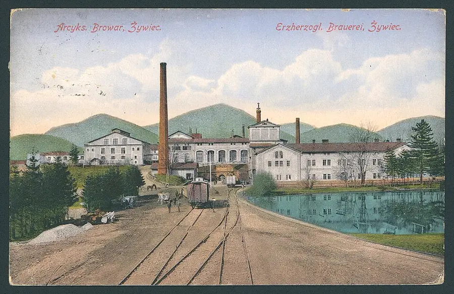
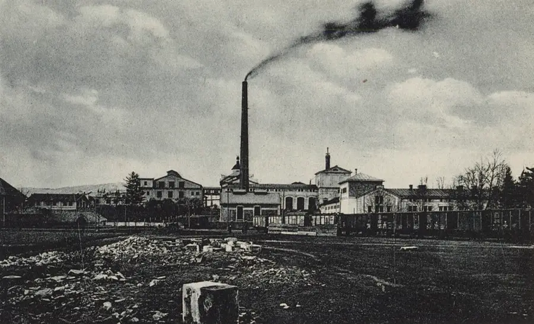

지비에츠 양조장 Żywiec Brewery
지비에츠 양조장(Żywiec Brewery)은 폴란드 지비에츠에 본사를 둔 맥주 양조장이다. 폴란드에서 가장 큰 양조장이자 맥주 생산업체 가운데 하나이며, 1856년에 설립되었다.
최종 업데이트
지비에츠 양조장은 어떤 브랜드인가
지비에츠 양조장은 폴란드의 대표적인 맥주 생산업체 가운데 하나이다. 알코올 도수 5.5%의 페일 라거를 만든다.
Grupa Żywiec S.A.를 구성하는 다섯 개 주요 양조장 가운데 하나이며, 연간 500만 헥토리터를 생산할 수 있는 설비를 갖춰 그룹에서 가장 큰 양조장이다. 현재 주요 사업에 대한 지배권은 네덜란드의 Heineken Group이 99% 지분으로 갖고 있다.
지비에츠 로고는 폴란드에서 가장 유명한 맥주 상표이자 양조장 전체의 상표이다. 2025년 Żywiec Group은 가격과 위축된 맥주 시장을 이유로 Namysłów의 양조장을 2026년에 닫겠다고 발표했다.
지비에츠 양조장은 어떻게 시작되고 성장했나
양조장은 1856년 당시 오스트리아령 폴란드에 속했던 지비에츠 마을에서 가동을 시작했다. 제2차 세계대전 이후 폴란드 공산 정부가 몰수하기 전까지 합스부르크 황실 가문이 소유했다.
1913년에는 오스트리아-헝가리 제국의 다른 도시들로 유통을 시작했다. 1990년대 초 원소유주의 후손들이 국유화와 합스부르크 가문의 이름 및 문장 사용을 이유로 폴란드 정부를 상대로 소송을 제기했으며, 이 사건은 2005년 12월 비공개 조건으로 법정 밖에서 합의되었다.
1990년대에는 Heineken International이 양조장을 인수해 현대화했다.
지비에츠 양조장의 브랜드 아이덴티티는 무엇인가
합스부르크 가문의 소유라는 역사와 크라쿠프 문장, 크라코비아크를 추는 남녀를 담은 로고를 지녔으며, 폴란드에서 가장 유명한 맥주 상표로 꼽힌다.
지비에츠 양조장의 대표 제품과 서비스는 무엇인가
양조장은 알코올 도수 5.5%에서 9.5%에 이르는 페일 라거를 중심으로 여러 맥주 브랜드를 생산한다. 대표 제품인 Żywiec Jasne Pełne, 곧 Żywiec Beer는 도수 5.5%의 페일 라거로, 지비에츠에서 거의 150년 동안 양조되어 왔다.
어두운 포터인 Żywiec Porter도 있으며, 이 제품은 한때 Cieszyn Brewery에서 양조되었다. Żywiec Beer는 전통 방식으로 천연 재료와 산의 샘물을 사용해 양조하며, 미국에서는 330ml 병 6팩과 12팩, 500ml 캔과 병으로 판매된다.
Grupa Żywiec S.A.는 Żywiec Brewery, Elbrewery, Leżajsk, Warka Brewery, Browar Namysłów의 다섯 양조장으로 구성된다.
지비에츠 양조장은 지금 어떤 상태인가
현재 Grupa Żywiec S.A.의 주요 사업은 네덜란드 Heineken Group(Heineken International Beheer B.V.)이 99% 지분으로 지배하고 있다. 지비에츠 양조장은 연간 500만 헥토리터를 생산할 수 있어 그룹에서 가장 큰 양조장이다.
2025년 Żywiec Group은 가격과 위축되는 맥주 시장을 이유로 Namysłów 양조장을 2026년에 폐쇄하겠다고 발표했다.
사진으로 보는 지비에츠 양조장의 역사


자주 묻는 질문
지비에츠 양조장는 어느 나라 브랜드인가요?
지비에츠 양조장는 폴란드의 식음료 브랜드입니다.
지비에츠 양조장는 언제 설립되었나요?
지비에츠 양조장는 1856년 설립되었습니다.
지비에츠 양조장의 브랜드 아이덴티티는 무엇인가요?
합스부르크 가문의 소유라는 역사와 크라쿠프 문장, 크라코비아크를 추는 남녀를 담은 로고를 지녔으며, 폴란드에서 가장 유명한 맥주 상표로 꼽힌다.
지비에츠 양조장의 대표 제품은 무엇인가요?
양조장은 알코올 도수 5.5%에서 9.5%에 이르는 페일 라거를 중심으로 여러 맥주 브랜드를 생산한다.
지비에츠 양조장는 현재 어떤 상태인가요?
현재 Grupa Żywiec S.A.의 주요 사업은 네덜란드 Heineken Group(Heineken International Beheer B.V.)이 99% 지분으로 지배하고 있다.
지비에츠 양조장의 본사는 어디에 있나요?
지비에츠 양조장의 본사는 지비에츠에 있습니다(위키데이터 기준).
지비에츠 양조장의 공식 웹사이트는 어디인가요?
지비에츠 양조장의 공식 웹사이트는 http://www.grupazywiec.pl/ 입니다.
출처와 검증
지비에츠 양조장 관련 참고: 공식 웹사이트 · 위키데이터 Q75438 · 한국어 위키백과 · 영어 위키백과. 브랜드명은 한글과 원어를 함께 표기하되 데이터에 없는 표기는 만들지 않습니다. 기원 국가·설립연도는 검수된 정의문에서 확인된 값을 우선하고, 없을 때만 공식 웹사이트 URL이 일치하는 위키데이터 개체의 값을 씁니다. 웹 첫 보관은 인터넷 아카이브가 공식 사이트 첫 화면을 처음 보관한 날로, 사이트 개설일과 다를 수 있습니다. 위키데이터 값은 2026-11-08 기준입니다.